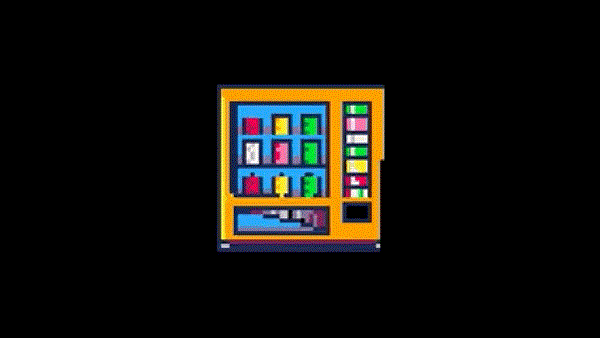
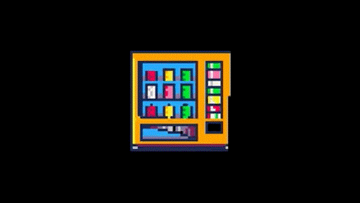

Welcome!
Welcome to Asephri.net! On this site, you'll find my personal projects, experiments and ideas, all made with creativity, anger and a love for the web I grew up with. From shitty games to random scripts I've got them all.
There's also a gallery with pixel art and 3d model-gifs that form the basis of my assets for my games I've made over the years, they are all very simple but it is what it is..
There's also a collection of game servers for you to come and play on. They most likely are down currently as I'm looking for a new host but reach out if you'd like to join and be added to the whitelist for the game you want!.
Feel free to explore, give feedback, or just enjoy the place. Thanks for stopping by!
Online!
 The website is finally live!, its been a few months since i did any work on the codebase etc but after many iterations and some research i'm finally done.
The hosting started yesterday with an older version of the sites code, quickly remodeled to enable me to get something up. From there I began work on this version which is version 6.something for those who care.
Looking at other peoples personal sites and pages really helped to get an idea how best to structure this without it being a god damn mess. This is a bento style flex box page at this point but hey, its still not completely mobile compatible lol.
The game downloads still work they are just located on my Github now and they are private. I want to polish them abit before letting them be public access again. They have glaring issues and its not a nice representation of me or good work despite it being pretty good.
The scripts and programs also need work as they could be more user friendly rather than having to know how they work and tie into other scripts I created.
The website is finally live!, its been a few months since i did any work on the codebase etc but after many iterations and some research i'm finally done.
The hosting started yesterday with an older version of the sites code, quickly remodeled to enable me to get something up. From there I began work on this version which is version 6.something for those who care.
Looking at other peoples personal sites and pages really helped to get an idea how best to structure this without it being a god damn mess. This is a bento style flex box page at this point but hey, its still not completely mobile compatible lol.
The game downloads still work they are just located on my Github now and they are private. I want to polish them abit before letting them be public access again. They have glaring issues and its not a nice representation of me or good work despite it being pretty good.
The scripts and programs also need work as they could be more user friendly rather than having to know how they work and tie into other scripts I created.
Whats next?
My next goals are quite simple.
- Expand, maintain the code for the site.
- Refactor and polish previous projects.
- Find a home for the game servers.
- Improve art and music skills for future projects.
22nd of December 2024 @ 20:04pm
Website completion
 I'm not a huge fan of the background but it was the simplest I could make and I do intend to swap it out eventually for something more fun to me personally.
Along with restyling the site I have also restructured each page using tables to allow more control on how content is displayed. I'm sure there is better methods to this but it works for now and doesn't look bad. I would like a better image tiling method however and to adjust the padding between columns and rows.
I'm going to figure out the best way to host the website now it's in a state I am happy with. It would be fun to create a way to create posts from inside the website but that's another project for another time.
I'll still update the blog with updates of other projects I am working on and eventually someone other than me will be able to read them; and I'm thinking of adding a page for my personal hobbies.
Overall this has been a fun experience for me and I really want to modify the site over time to become better.
I will be adding another navigation bar for the blog. You'll see it if you view this in the future. I'll move the current site blog to one called "Site Development"
I'm not a huge fan of the background but it was the simplest I could make and I do intend to swap it out eventually for something more fun to me personally.
Along with restyling the site I have also restructured each page using tables to allow more control on how content is displayed. I'm sure there is better methods to this but it works for now and doesn't look bad. I would like a better image tiling method however and to adjust the padding between columns and rows.
I'm going to figure out the best way to host the website now it's in a state I am happy with. It would be fun to create a way to create posts from inside the website but that's another project for another time.
I'll still update the blog with updates of other projects I am working on and eventually someone other than me will be able to read them; and I'm thinking of adding a page for my personal hobbies.
Overall this has been a fun experience for me and I really want to modify the site over time to become better.
I will be adding another navigation bar for the blog. You'll see it if you view this in the future. I'll move the current site blog to one called "Site Development"
26th of June 2024 @ 13:22pm
A Gallery and New Theme!
 In the above image, you can see I have completed a rework of some of the style sheet, switching out the old image system for a new one along with implementing a grid-style system to structure pages rather than rely solely on flex boxes to do everything.
The way it works now is the flex boxes have grids inside of them, allowing me to have more granular control over what's happening inside the boxes and allowing for better spacing.
Along with the style sheet rework and redoing a lot of the website, many elements are now curved. I wanted to create an older-style website from the mid-2000s I saw as a child, but I basically decided that allowing it to be more modern is probably best for readability. This does not mean I'm sticking to conventional web design rules though. I am having fun and not subjecting myself to hard rules.
Most of the code is commented anyway so I don’t forget lol, and if I ever need anyone to help me redo parts or go over my code with me, it's very readable and easy to figure out what's doing what.
In the above image, you can see I have completed a rework of some of the style sheet, switching out the old image system for a new one along with implementing a grid-style system to structure pages rather than rely solely on flex boxes to do everything.
The way it works now is the flex boxes have grids inside of them, allowing me to have more granular control over what's happening inside the boxes and allowing for better spacing.
Along with the style sheet rework and redoing a lot of the website, many elements are now curved. I wanted to create an older-style website from the mid-2000s I saw as a child, but I basically decided that allowing it to be more modern is probably best for readability. This does not mean I'm sticking to conventional web design rules though. I am having fun and not subjecting myself to hard rules.
Most of the code is commented anyway so I don’t forget lol, and if I ever need anyone to help me redo parts or go over my code with me, it's very readable and easy to figure out what's doing what.
 Shown above, this work has led to the introduction of the gallery page, where you will find none other than my adorable cat Miso. He is a lovely, loyal cat who is quite playful. He's suspected to be a British short-haired tuxedo mix of some sort.
Shown above, this work has led to the introduction of the gallery page, where you will find none other than my adorable cat Miso. He is a lovely, loyal cat who is quite playful. He's suspected to be a British short-haired tuxedo mix of some sort.
25th of June 2024 @ 17:11pm
Video Games!
 Voidfighter now has its own home here for ease of access!
I thought it would be best to house everything I make on the website here so it can all be found in the same space rather than split across the web. That'd be too much web surfing to find everything about me, so why not have 0 privacy here instead?
The video game section of the website will house more games in the future and I am going to work on porting them eventually. These are more of learning experiences for me rather than full playable fun games. Although I did get lost in playing it for a bit the first time I finished it.
I also changed the site's image padding to be a gradient, and the entire site still feels a bit creatively wrong. I think I'll redo the color theme again eventually as well as perhaps a more modern grid/flex system. Currently, to implement anything, it's a bit silly.
Voidfighter now has its own home here for ease of access!
I thought it would be best to house everything I make on the website here so it can all be found in the same space rather than split across the web. That'd be too much web surfing to find everything about me, so why not have 0 privacy here instead?
The video game section of the website will house more games in the future and I am going to work on porting them eventually. These are more of learning experiences for me rather than full playable fun games. Although I did get lost in playing it for a bit the first time I finished it.
I also changed the site's image padding to be a gradient, and the entire site still feels a bit creatively wrong. I think I'll redo the color theme again eventually as well as perhaps a more modern grid/flex system. Currently, to implement anything, it's a bit silly.
25th of June 2024 @ 12:14pm
Website Creation Has Started!
 I have begun to code my website :)
I've always had a fascination with programming, especially websites. I don't know why I wanted one so badly, but now I have it. I originally wanted to be a web developer when I was younger but life came about and I became a loser instead. This will be fun to post on though and play with :D
I have begun to code my website :)
I've always had a fascination with programming, especially websites. I don't know why I wanted one so badly, but now I have it. I originally wanted to be a web developer when I was younger but life came about and I became a loser instead. This will be fun to post on though and play with :D
24th of June 2024 @ 21:33pm


 
